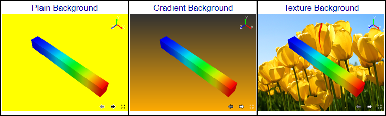

Background¶
This command allows user to set new background type.
Background panel
Plain |
Mono color as background |
Gradient |
Gradient of two colors as background. Default type of application |
Texture |
Image Texture as background |
Update All Viewpoints |
Updates Background for all existing viewpoints. |
How to change background into Plain Background?

{kind=link}
How to change Background into Gradient?
Click Gradient option.
By default, a gradient of blue and white color are applied.
Change the two colors as done in ‘Plain’ option.
View the change in viewer.
How to change Background into Texture?
Click Texture option.
Click right most file browser button.
It pops up file browser dialog.
Select an image file and click Open..
Texture mode option is enabled and visible, if ‘Texture’ option is checked.
Texture Mode’ option decides whether the image should be centered or stretched or tiled or fit view. ‘Center’ option is the default.
User can select any of these options ‘Center’, ‘Stretch’, ‘Tile’ and ‘Fit View’.
The following table shows the images with different background type.
